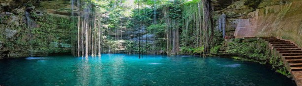

What to See and Do?
There are many things to see and do here in Cozumel. It can be overwhelming when planning a trip. Unless you're staying for a week or more, it is impossible to see it all. We have narrowed down opions below to make the most out of your short trip. We have adventures and sight seeing activies for all types of travelers. Any questions please contact us!
Jungle to Jade River Adventure
Cozumel Jungle Adventure is a family friendly tour. You will have a guide through the jungle where you can see some of the ruins, but you may be having way to much fun to notice. Near the end of the jungle trail you will arrive at Jade Caverns River. The beauty is beyond words and better yet, you can go cool off and have lunch. You can choose to have ATV or Jeep Tours.
Myan Cenotes and Ruins
Ready to combine history with adventure. Taking a tour to the Mayan Ruins is a once in a life time experience.
Go get up close to the Mayans Ruins (dated 1500's) and see these legendary monuments. After your fill of history, explore the underground
rivers of the island. The ruins and history of Tulum, San Gervasio, and Ruinas Mays del San Gervasio are captivating tells.
Book with Cucurumbe Tours for the best experience: Click Here
Kunche Culture
The Kunche is located in the oldest part of Cozumel. Locals share their ancestors lifestyle and traditions.
This is a sanctuary for these continuing practices. Important note to please show respect when visiting. Click on the link below for a more
indepth experience.
Kunche Site Click Here
Xplor Adventure Park
It is a short ferry ride to the Playa Del Carmen, but worth the trip.
Go rafting in the underground caverns, snorkeling with the fish, riding on the trails...endless fun in one park.
Who knows, you may see locals traveling by canoe. The canoe has been used since the 1500's by the Mayans. Many locals still
carry on this tradition today.
Xplor Park Click Here
Playa Del Carmen
This is a short ferry ride to Plays Del Carmen to see more of the Mayan Ruins. Over in this area there are other activities you can explore. These hold to more ruins by the Coba Mayan and Playcar Mayans. Plus after the ruins, head south to Delphinus Xcaret to see dolphins and get a chance to swim with them.